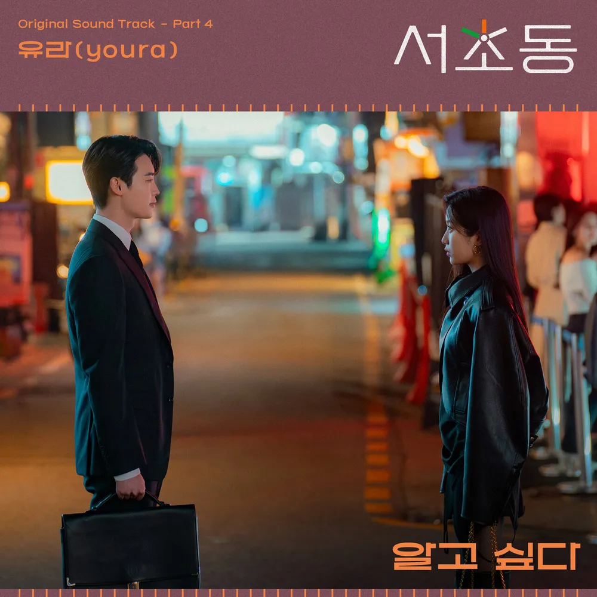

안녕하세요, 라보엠입니다.
요즘 어떤 드라마를 보시나요? 저는 tvN 토일 드라마 서초동을 챙겨 보고 있는데요, 오늘은 ‘서초동 OST’ 네번재 노래이자 주인공의 사랑과 함께 들려오기 시작한 유라의 신곡 ‘알고싶다’를 소개해드리겠습니다. 법정·로맨스라는 다채로운 드라마 한복판에서, 유라만의 독특한 보컬과 섬세한 감성이 시청자들의 마음을 깊이 울리고 있습니다. 싱어송 라이터 유라가 이번 곡에서 보여주는 새로운 시도와 진심 어린 고백은 더욱 특별하게 다가옵니다.

[유라] 알고싶다 – 밤하늘, 그리고 궁금함의 시작
‘알고싶다’는 서초동의 조용한 밤, 불빛 아래 홀로 선 사람의 마음에서 출발합니다. 노래는 감각적인 기타 리프와 부드러운 피아노로 시작되어, 유라의 맑고 서늘한 목소리가 곧바로 듣는 이의 귀를 사로잡습니다. “불 꺼진 골목 사이로 스며든 발걸음, 마음에 남은 단서들을 하나씩 더듬으며 나는 또 널 생각해” 첫 소절에서 이미 곡의 분위기가 온전히 느껴집니다. 도시의 고요함과 그 안에 깃든 미묘한 불안, 혹은 다가오는 기대감. 늘 지나쳤던 길도, 누군가를 떠올린 순간부터는 새롭게 다가옵니다. 드라마의 엔딩 장면에서 첫 등장, 주인공의 미묘한 감정 변화와 어둠, 그리고 찾아내야 할 진실 사이에서 흐릅니다. 노래가 시작되는 순간 카메라가 주인공의 클로즈업을 비추고, 그 뒷배경으로 은은하게 서울의 불빛과 밤거리가 이어집니다.
곡의 편곡 역시 공간감이 돋보입니다. 미니멀한 악기 편성과 풍부한 리버브 효과가 도심의 밤공기와 어우러져, 청자에게 마치 서초동 한복판에 서 있는 듯한 몰입감을 선사합니다. 중간중간 등장하는 일렉기타, 숨을 멈추게 하는 브릿지, 그리고 유라의 점점 격해지는 호흡 소리는 스릴러와 로맨스를 동시에 녹여냅니다. 유라 보컬 역시 곡의 감정선을 섬세하게 따라갑니다. 조용한 속삭임과 힘 있는 고음이 절묘하게 교차하며, 마치 드라마의 중요한 열쇠를 쥔 인물처럼, 끝내 궁금함을 남깁니다.
유라는 과거보다 더욱 안정적이고 깊어진 음색으로 청자의 마음에 긴 여운을 남깁니다.
가사 속에 녹아든 탐색과 설렘
‘알고싶다’의 가사는 누군가에 대한 궁금함, 그리고 답 없는 질문에서 비롯된 사랑의 시작을 섬세하게 포착합니다.
“너의 하루엔 어떤 얼굴이 남아 있을까,
혹시 내가 그 자리에 남아 있을까,
너무 조심스러워 멀리서 바라만 보다,
한 걸음 가까워지려 해”
짧은 문장들 안에 멀어질지도 모르는 불안, 그러나 멈출 수 없는 호기심이 자연스럽게 묻어납니다.
또한, “익숙했던 거리에도 너의 모습이 뒤섞여, 어느새 모든 순간이 궁금해져만 가”라는 구절에서는 서초동이라는 공간이 두 사람만의 기억으로 채워짐을 느낄 수 있습니다. 후렴구에 이르러 유라는 더욱 절실해집니다.
“알고싶다,
네 마음 속 깊은 곳,
숨어있는 진심을,
숨조차 삼키며
가까이 가고 싶은 내 마음을”
이 곡은 미묘한 눈빛과 작은 행동, 말하지 못한 마음까지 ‘알고싶다’는 바람을 포근하고 애틋하게 그려냅니다.
맺음말
유라의 ‘알고싶다’는 사랑이 시작되는 순간의 불확실함, 그러나 멈출 수 없는 이끌림을 아련하게 품은 곡입니다. 드라마 ‘서초동’의 스토리와 완벽히 어우러지면서도, 누구에게나 익숙한 궁금함·설렘·조심스러움까지 고스란히 노래하고 있습니다. 오늘 밤, 혹은 서늘한 새벽길을 걷는 순간 이 곡을 떠올려본다면, 여러분 역시 자신만의 ‘알고싶다’가 가슴 한켠에서 조용히 피어날지도 모릅니다.